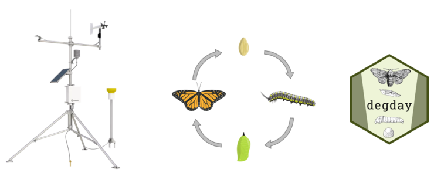
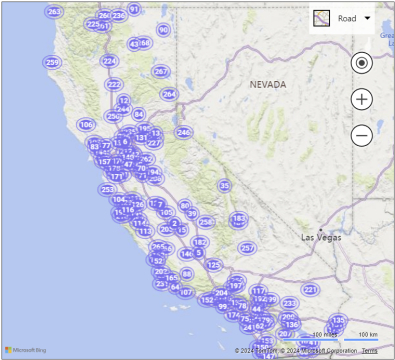
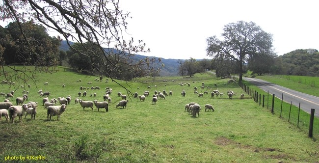
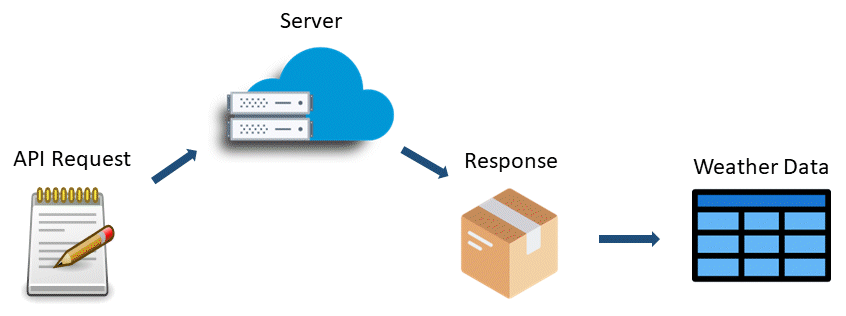

Build a Degree Day Decision Support Tool in R
Part 2. Weather APIs


May
10,
2024
https://ucanr-igis.github.io/degday-shiny-s24/

Accumulated degree day models:
degday
Typically degree day models requires daily temperature data for as many as 3 time periods:

Active CIMIS Stations
Public Benefit Corporation
Aggregator of weather station data
> 120,000 stations globally
modern API (token required)
APIs are common pool resources! Everybody benefits when we all follow a few best practices.

user-agent
in the header of your request.
1. Include a line for your token in your .Renviron
file:
MY_CENSUS_KEY = '05xxxxxxxxxxxxxxxxxxxxxxxxxxxxxxxxxxxx93'
Tip: you can edit .Renviron within
RStudio with usethis::edit_r_environ()
2. Read it into R:
GitHub users:
.gitignore
see keyring
Depending on the API service, you may also be able to configure one or more of the following:
Create an app token or service account for each project (i.e., instead of your main account)
Provision your token / key with the minimum number of permissions required
IP filtering
expiration date
usage limits
R is well-equipped to handle dates and date-times.
lubridate provides a number of convenience
functions.

Challenge: Dates and times often come as text in a variety of formats:
lubridate has functions that can handle most cases:
ymd_hms(), ymd_hm(), ymd_h()
ydm_hms(), ydm_hm(), ydm_h()
mdy_hms(), mdy_hm(), mdy_h()
dmy_hms(), dmy_hm(), dmy_h()
Examples:
## [1] "2024-03-17"## [1] "2017-11-28 14:02:00 UTC"
All of these function have an optional argument tz to
specify the time zone:
Time zones have standardized names. Example:
All time zone names:
## [1] "Africa/Abidjan" "Africa/Accra"
## [3] "Africa/Addis_Ababa" "Africa/Algiers"
## [5] "Africa/Asmara" "Africa/Asmera"
## [7] "Africa/Bamako" "Africa/Bangui"
## [9] "Africa/Banjul" "Africa/Bissau"
## [11] "Africa/Blantyre" "Africa/Brazzaville"
## [13] "Africa/Bujumbura" "Africa/Cairo"
## [15] "Africa/Casablanca" "Africa/Ceuta"
## [17] "Africa/Conakry" "Africa/Dakar"
## [19] "Africa/Dar_es_Salaam" "Africa/Djibouti"
## [21] "Africa/Douala" "Africa/El_Aaiun"
## [23] "Africa/Freetown" "Africa/Gaborone"
## [25] "Africa/Harare" "Africa/Johannesburg"
## [27] "Africa/Juba" "Africa/Kampala"
## [29] "Africa/Khartoum" "Africa/Kigali"
## [31] "Africa/Kinshasa" "Africa/Lagos"
## [33] "Africa/Libreville" "Africa/Lome"
## [35] "Africa/Luanda" "Africa/Lubumbashi"
## [37] "Africa/Lusaka" "Africa/Malabo"
## [39] "Africa/Maputo" "Africa/Maseru"
## [41] "Africa/Mbabane" "Africa/Mogadishu"
## [43] "Africa/Monrovia" "Africa/Nairobi"
## [45] "Africa/Ndjamena" "Africa/Niamey"
## [47] "Africa/Nouakchott" "Africa/Ouagadougou"
## [49] "Africa/Porto-Novo" "Africa/Sao_Tome"
## [51] "Africa/Timbuktu" "Africa/Tripoli"
## [53] "Africa/Tunis" "Africa/Windhoek"
## [55] "America/Adak" "America/Anchorage"
## [57] "America/Anguilla" "America/Antigua"
## [59] "America/Araguaina" "America/Argentina/Buenos_Aires"
## [61] "America/Argentina/Catamarca" "America/Argentina/ComodRivadavia"
## [63] "America/Argentina/Cordoba" "America/Argentina/Jujuy"
## [65] "America/Argentina/La_Rioja" "America/Argentina/Mendoza"
## [67] "America/Argentina/Rio_Gallegos" "America/Argentina/Salta"
## [69] "America/Argentina/San_Juan" "America/Argentina/San_Luis"
## [71] "America/Argentina/Tucuman" "America/Argentina/Ushuaia"
## [73] "America/Aruba" "America/Asuncion"
## [75] "America/Atikokan" "America/Atka"
## [77] "America/Bahia" "America/Bahia_Banderas"
## [79] "America/Barbados" "America/Belem"
## [81] "America/Belize" "America/Blanc-Sablon"
## [83] "America/Boa_Vista" "America/Bogota"
## [85] "America/Boise" "America/Buenos_Aires"
## [87] "America/Cambridge_Bay" "America/Campo_Grande"
## [89] "America/Cancun" "America/Caracas"
## [91] "America/Catamarca" "America/Cayenne"
## [93] "America/Cayman" "America/Chicago"
## [95] "America/Chihuahua" "America/Ciudad_Juarez"
## [97] "America/Coral_Harbour" "America/Cordoba"
## [99] "America/Costa_Rica" "America/Creston"
## [101] "America/Cuiaba" "America/Curacao"
## [103] "America/Danmarkshavn" "America/Dawson"
## [105] "America/Dawson_Creek" "America/Denver"
## [107] "America/Detroit" "America/Dominica"
## [109] "America/Edmonton" "America/Eirunepe"
## [111] "America/El_Salvador" "America/Ensenada"
## [113] "America/Fort_Nelson" "America/Fort_Wayne"
## [115] "America/Fortaleza" "America/Glace_Bay"
## [117] "America/Godthab" "America/Goose_Bay"
## [119] "America/Grand_Turk" "America/Grenada"
## [121] "America/Guadeloupe" "America/Guatemala"
## [123] "America/Guayaquil" "America/Guyana"
## [125] "America/Halifax" "America/Havana"
## [127] "America/Hermosillo" "America/Indiana/Indianapolis"
## [129] "America/Indiana/Knox" "America/Indiana/Marengo"
## [131] "America/Indiana/Petersburg" "America/Indiana/Tell_City"
## [133] "America/Indiana/Vevay" "America/Indiana/Vincennes"
## [135] "America/Indiana/Winamac" "America/Indianapolis"
## [137] "America/Inuvik" "America/Iqaluit"
## [139] "America/Jamaica" "America/Jujuy"
## [141] "America/Juneau" "America/Kentucky/Louisville"
## [143] "America/Kentucky/Monticello" "America/Knox_IN"
## [145] "America/Kralendijk" "America/La_Paz"
## [147] "America/Lima" "America/Los_Angeles"
## [149] "America/Louisville" "America/Lower_Princes"
## [151] "America/Maceio" "America/Managua"
## [153] "America/Manaus" "America/Marigot"
## [155] "America/Martinique" "America/Matamoros"
## [157] "America/Mazatlan" "America/Mendoza"
## [159] "America/Menominee" "America/Merida"
## [161] "America/Metlakatla" "America/Mexico_City"
## [163] "America/Miquelon" "America/Moncton"
## [165] "America/Monterrey" "America/Montevideo"
## [167] "America/Montreal" "America/Montserrat"
## [169] "America/Nassau" "America/New_York"
## [171] "America/Nipigon" "America/Nome"
## [173] "America/Noronha" "America/North_Dakota/Beulah"
## [175] "America/North_Dakota/Center" "America/North_Dakota/New_Salem"
## [177] "America/Nuuk" "America/Ojinaga"
## [179] "America/Panama" "America/Pangnirtung"
## [181] "America/Paramaribo" "America/Phoenix"
## [183] "America/Port-au-Prince" "America/Port_of_Spain"
## [185] "America/Porto_Acre" "America/Porto_Velho"
## [187] "America/Puerto_Rico" "America/Punta_Arenas"
## [189] "America/Rainy_River" "America/Rankin_Inlet"
## [191] "America/Recife" "America/Regina"
## [193] "America/Resolute" "America/Rio_Branco"
## [195] "America/Rosario" "America/Santa_Isabel"
## [197] "America/Santarem" "America/Santiago"
## [199] "America/Santo_Domingo" "America/Sao_Paulo"
## [201] "America/Scoresbysund" "America/Shiprock"
## [203] "America/Sitka" "America/St_Barthelemy"
## [205] "America/St_Johns" "America/St_Kitts"
## [207] "America/St_Lucia" "America/St_Thomas"
## [209] "America/St_Vincent" "America/Swift_Current"
## [211] "America/Tegucigalpa" "America/Thule"
## [213] "America/Thunder_Bay" "America/Tijuana"
## [215] "America/Toronto" "America/Tortola"
## [217] "America/Vancouver" "America/Virgin"
## [219] "America/Whitehorse" "America/Winnipeg"
## [221] "America/Yakutat" "America/Yellowknife"
## [223] "Antarctica/Casey" "Antarctica/Davis"
## [225] "Antarctica/DumontDUrville" "Antarctica/Macquarie"
## [227] "Antarctica/Mawson" "Antarctica/McMurdo"
## [229] "Antarctica/Palmer" "Antarctica/Rothera"
## [231] "Antarctica/South_Pole" "Antarctica/Syowa"
## [233] "Antarctica/Troll" "Antarctica/Vostok"
## [235] "Arctic/Longyearbyen" "Asia/Aden"
## [237] "Asia/Almaty" "Asia/Amman"
## [239] "Asia/Anadyr" "Asia/Aqtau"
## [241] "Asia/Aqtobe" "Asia/Ashgabat"
## [243] "Asia/Ashkhabad" "Asia/Atyrau"
## [245] "Asia/Baghdad" "Asia/Bahrain"
## [247] "Asia/Baku" "Asia/Bangkok"
## [249] "Asia/Barnaul" "Asia/Beirut"
## [251] "Asia/Bishkek" "Asia/Brunei"
## [253] "Asia/Calcutta" "Asia/Chita"
## [255] "Asia/Choibalsan" "Asia/Chongqing"
## [257] "Asia/Chungking" "Asia/Colombo"
## [259] "Asia/Dacca" "Asia/Damascus"
## [261] "Asia/Dhaka" "Asia/Dili"
## [263] "Asia/Dubai" "Asia/Dushanbe"
## [265] "Asia/Famagusta" "Asia/Gaza"
## [267] "Asia/Harbin" "Asia/Hebron"
## [269] "Asia/Ho_Chi_Minh" "Asia/Hong_Kong"
## [271] "Asia/Hovd" "Asia/Irkutsk"
## [273] "Asia/Istanbul" "Asia/Jakarta"
## [275] "Asia/Jayapura" "Asia/Jerusalem"
## [277] "Asia/Kabul" "Asia/Kamchatka"
## [279] "Asia/Karachi" "Asia/Kashgar"
## [281] "Asia/Kathmandu" "Asia/Katmandu"
## [283] "Asia/Khandyga" "Asia/Kolkata"
## [285] "Asia/Krasnoyarsk" "Asia/Kuala_Lumpur"
## [287] "Asia/Kuching" "Asia/Kuwait"
## [289] "Asia/Macao" "Asia/Macau"
## [291] "Asia/Magadan" "Asia/Makassar"
## [293] "Asia/Manila" "Asia/Muscat"
## [295] "Asia/Nicosia" "Asia/Novokuznetsk"
## [297] "Asia/Novosibirsk" "Asia/Omsk"
## [299] "Asia/Oral" "Asia/Phnom_Penh"
## [301] "Asia/Pontianak" "Asia/Pyongyang"
## [303] "Asia/Qatar" "Asia/Qostanay"
## [305] "Asia/Qyzylorda" "Asia/Rangoon"
## [307] "Asia/Riyadh" "Asia/Saigon"
## [309] "Asia/Sakhalin" "Asia/Samarkand"
## [311] "Asia/Seoul" "Asia/Shanghai"
## [313] "Asia/Singapore" "Asia/Srednekolymsk"
## [315] "Asia/Taipei" "Asia/Tashkent"
## [317] "Asia/Tbilisi" "Asia/Tehran"
## [319] "Asia/Tel_Aviv" "Asia/Thimbu"
## [321] "Asia/Thimphu" "Asia/Tokyo"
## [323] "Asia/Tomsk" "Asia/Ujung_Pandang"
## [325] "Asia/Ulaanbaatar" "Asia/Ulan_Bator"
## [327] "Asia/Urumqi" "Asia/Ust-Nera"
## [329] "Asia/Vientiane" "Asia/Vladivostok"
## [331] "Asia/Yakutsk" "Asia/Yangon"
## [333] "Asia/Yekaterinburg" "Asia/Yerevan"
## [335] "Atlantic/Azores" "Atlantic/Bermuda"
## [337] "Atlantic/Canary" "Atlantic/Cape_Verde"
## [339] "Atlantic/Faeroe" "Atlantic/Faroe"
## [341] "Atlantic/Jan_Mayen" "Atlantic/Madeira"
## [343] "Atlantic/Reykjavik" "Atlantic/South_Georgia"
## [345] "Atlantic/St_Helena" "Atlantic/Stanley"
## [347] "Australia/ACT" "Australia/Adelaide"
## [349] "Australia/Brisbane" "Australia/Broken_Hill"
## [351] "Australia/Canberra" "Australia/Currie"
## [353] "Australia/Darwin" "Australia/Eucla"
## [355] "Australia/Hobart" "Australia/LHI"
## [357] "Australia/Lindeman" "Australia/Lord_Howe"
## [359] "Australia/Melbourne" "Australia/North"
## [361] "Australia/NSW" "Australia/Perth"
## [363] "Australia/Queensland" "Australia/South"
## [365] "Australia/Sydney" "Australia/Tasmania"
## [367] "Australia/Victoria" "Australia/West"
## [369] "Australia/Yancowinna" "Brazil/Acre"
## [371] "Brazil/DeNoronha" "Brazil/East"
## [373] "Brazil/West" "Canada/Atlantic"
## [375] "Canada/Central" "Canada/Eastern"
## [377] "Canada/Mountain" "Canada/Newfoundland"
## [379] "Canada/Pacific" "Canada/Saskatchewan"
## [381] "Canada/Yukon" "CET"
## [383] "Chile/Continental" "Chile/EasterIsland"
## [385] "CST6CDT" "Cuba"
## [387] "EET" "Egypt"
## [389] "Eire" "EST"
## [391] "EST5EDT" "Etc/GMT"
## [393] "Etc/GMT-0" "Etc/GMT-1"
## [395] "Etc/GMT-10" "Etc/GMT-11"
## [397] "Etc/GMT-12" "Etc/GMT-13"
## [399] "Etc/GMT-14" "Etc/GMT-2"
## [401] "Etc/GMT-3" "Etc/GMT-4"
## [403] "Etc/GMT-5" "Etc/GMT-6"
## [405] "Etc/GMT-7" "Etc/GMT-8"
## [407] "Etc/GMT-9" "Etc/GMT+0"
## [409] "Etc/GMT+1" "Etc/GMT+10"
## [411] "Etc/GMT+11" "Etc/GMT+12"
## [413] "Etc/GMT+2" "Etc/GMT+3"
## [415] "Etc/GMT+4" "Etc/GMT+5"
## [417] "Etc/GMT+6" "Etc/GMT+7"
## [419] "Etc/GMT+8" "Etc/GMT+9"
## [421] "Etc/GMT0" "Etc/Greenwich"
## [423] "Etc/UCT" "Etc/Universal"
## [425] "Etc/UTC" "Etc/Zulu"
## [427] "Europe/Amsterdam" "Europe/Andorra"
## [429] "Europe/Astrakhan" "Europe/Athens"
## [431] "Europe/Belfast" "Europe/Belgrade"
## [433] "Europe/Berlin" "Europe/Bratislava"
## [435] "Europe/Brussels" "Europe/Bucharest"
## [437] "Europe/Budapest" "Europe/Busingen"
## [439] "Europe/Chisinau" "Europe/Copenhagen"
## [441] "Europe/Dublin" "Europe/Gibraltar"
## [443] "Europe/Guernsey" "Europe/Helsinki"
## [445] "Europe/Isle_of_Man" "Europe/Istanbul"
## [447] "Europe/Jersey" "Europe/Kaliningrad"
## [449] "Europe/Kiev" "Europe/Kirov"
## [451] "Europe/Kyiv" "Europe/Lisbon"
## [453] "Europe/Ljubljana" "Europe/London"
## [455] "Europe/Luxembourg" "Europe/Madrid"
## [457] "Europe/Malta" "Europe/Mariehamn"
## [459] "Europe/Minsk" "Europe/Monaco"
## [461] "Europe/Moscow" "Europe/Nicosia"
## [463] "Europe/Oslo" "Europe/Paris"
## [465] "Europe/Podgorica" "Europe/Prague"
## [467] "Europe/Riga" "Europe/Rome"
## [469] "Europe/Samara" "Europe/San_Marino"
## [471] "Europe/Sarajevo" "Europe/Saratov"
## [473] "Europe/Simferopol" "Europe/Skopje"
## [475] "Europe/Sofia" "Europe/Stockholm"
## [477] "Europe/Tallinn" "Europe/Tirane"
## [479] "Europe/Tiraspol" "Europe/Ulyanovsk"
## [481] "Europe/Uzhgorod" "Europe/Vaduz"
## [483] "Europe/Vatican" "Europe/Vienna"
## [485] "Europe/Vilnius" "Europe/Volgograd"
## [487] "Europe/Warsaw" "Europe/Zagreb"
## [489] "Europe/Zaporozhye" "Europe/Zurich"
## [491] "GB" "GB-Eire"
## [493] "GMT" "GMT-0"
## [495] "GMT+0" "GMT0"
## [497] "Greenwich" "Hongkong"
## [499] "HST" "Iceland"
## [501] "Indian/Antananarivo" "Indian/Chagos"
## [503] "Indian/Christmas" "Indian/Cocos"
## [505] "Indian/Comoro" "Indian/Kerguelen"
## [507] "Indian/Mahe" "Indian/Maldives"
## [509] "Indian/Mauritius" "Indian/Mayotte"
## [511] "Indian/Reunion" "Iran"
## [513] "Israel" "Jamaica"
## [515] "Japan" "Kwajalein"
## [517] "Libya" "MET"
## [519] "Mexico/BajaNorte" "Mexico/BajaSur"
## [521] "Mexico/General" "MST"
## [523] "MST7MDT" "Navajo"
## [525] "NZ" "NZ-CHAT"
## [527] "Pacific/Apia" "Pacific/Auckland"
## [529] "Pacific/Bougainville" "Pacific/Chatham"
## [531] "Pacific/Chuuk" "Pacific/Easter"
## [533] "Pacific/Efate" "Pacific/Enderbury"
## [535] "Pacific/Fakaofo" "Pacific/Fiji"
## [537] "Pacific/Funafuti" "Pacific/Galapagos"
## [539] "Pacific/Gambier" "Pacific/Guadalcanal"
## [541] "Pacific/Guam" "Pacific/Honolulu"
## [543] "Pacific/Johnston" "Pacific/Kanton"
## [545] "Pacific/Kiritimati" "Pacific/Kosrae"
## [547] "Pacific/Kwajalein" "Pacific/Majuro"
## [549] "Pacific/Marquesas" "Pacific/Midway"
## [551] "Pacific/Nauru" "Pacific/Niue"
## [553] "Pacific/Norfolk" "Pacific/Noumea"
## [555] "Pacific/Pago_Pago" "Pacific/Palau"
## [557] "Pacific/Pitcairn" "Pacific/Pohnpei"
## [559] "Pacific/Ponape" "Pacific/Port_Moresby"
## [561] "Pacific/Rarotonga" "Pacific/Saipan"
## [563] "Pacific/Samoa" "Pacific/Tahiti"
## [565] "Pacific/Tarawa" "Pacific/Tongatapu"
## [567] "Pacific/Truk" "Pacific/Wake"
## [569] "Pacific/Wallis" "Pacific/Yap"
## [571] "Poland" "Portugal"
## [573] "PRC" "PST8PDT"
## [575] "ROC" "ROK"
## [577] "Singapore" "Turkey"
## [579] "UCT" "Universal"
## [581] "US/Alaska" "US/Aleutian"
## [583] "US/Arizona" "US/Central"
## [585] "US/East-Indiana" "US/Eastern"
## [587] "US/Hawaii" "US/Indiana-Starke"
## [589] "US/Michigan" "US/Mountain"
## [591] "US/Pacific" "US/Samoa"
## [593] "UTC" "W-SU"
## [595] "WET" "Zulu"
## attr(,"Version")
## [1] "2024a"
You can convert the date-time object to a different time zone (as
opposed to merely assigning it a different time zone) with
with_tz():
st_patricks_noon_pdt_dt |> lubridate::month()
st_patricks_noon_pdt_dt |> lubridate::day()
st_patricks_noon_pdt_dt |> lubridate::year()
st_patricks_noon_pdt_dt |> lubridate::yday()## [1] 3
## [1] 17
## [1] 2024
## [1] 77

The information in an API request is entered in different places on the ‘order form’.
Every API is different - you have to read the API documentation!
ex.: https://api.synopticdata.com/v2
https://api.synopticdata.com/v2/stations/timeseries
https://api.cal-adapt.org/api/series/tasmax_year_MIROC5_rcp45/events
https://api.synopticdata.com/v2/stations/timeseries?token=a2cxxxe862c14xxxx4xxxx5xxxxcxxxx&stid=CI152&vars=air_temp,evapotranspiration,precip_accum_one_hour,soil_temp&varsoperator=and&units=english&start=202312010800&end=202401010800&obtimezone=local
Examples of header content:
httr2httr2 provides functions for creating and sending API
requests.
Numerous other helper functions for authentication, feedback, network options, error handling, rate limiting, etc.
All the following functions accept a request object, add a piece to it, and return a request object.
This means you can pipe them together to build your API request:
request()req_url_path_append()req_url_query()req_headers()req_user_agent()
Example:
library(httr2)
sac_midcentury_req <- request("https://api.cal-adapt.org/api/series") |>
req_user_agent("oski@berkeley.edu") |>
req_url_path_append("tasmax_year_MIROC5_rcp45/events") |>
req_url_query(g = "POINT (-121.4687 38.5938)",
start = "2040-01-01",
end = "2070-12-31")
sac_midcentury_req## <httr2_request>## GET
## https://api.cal-adapt.org/api/series/tasmax_year_MIROC5_rcp45/events?g=POINT%20%28-121.4687%2038.5938%29&start=2040-01-01&end=2070-12-31## Body: empty## Options:## • useragent: 'oski@berkeley.edu'
Before you send a request, it’s a good idea to do a dry run:
## GET /api/series/tasmax_year_MIROC5_rcp45/events?g=POINT%20%28-121.4687%2038.5938%29&start=2040-01-01&end=2070-12-31 HTTP/1.1
## Host: api.cal-adapt.org
## User-Agent: oski@berkeley.edu
## Accept: */*
## Accept-Encoding: deflate, gzip
If everything looks good, send it:
Note: At this point you may need to tell your Firewall to let RStudio / R access the internet
## <httr2_response>## GET
## https://api.cal-adapt.org/api/series/tasmax_year_MIROC5_rcp45/events/?g=POINT%20%28-121.4687%2038.5938%29&start=2040-01-01&end=2070-12-31## Status: 200 OK## Content-Type: application/json## Body: In memory (1223 bytes)
Check the status:
## [1] 200
## [1] "OK"
View all headers:
## <httr2_headers>## Server: nginx
## Date: Tue, 21 May 2024 00:04:32 GMT
## Content-Type: application/json; charset=utf-8
## Transfer-Encoding: chunked
## Connection: keep-alive
## Vary: Accept-Encoding
## Vary: Accept
## Allow: GET, POST, HEAD, OPTIONS
## X-Frame-Options: SAMEORIGIN
## Expires: Thu, 20 Jun 2024 00:04:32 GMT
## Cache-Control: max-age=2592000
## Access-Control-Allow-Origin: *
## Access-Control-Allow-Methods: GET, POST, OPTIONS
## Access-Control-Allow-Headers: DNT,X-CustomHeader,Keep-Alive,User-Agent,X-Requested-With,If-Modified-Since,Cache-Control,Content-Type,Location,X-Request-URL
## Access-Control-Expose-Headers: Cache-Control,Content-Type,Content-Language,Expires,Last-Modified,Pragma,Location,X-Request-URL
## Content-Encoding: gzip
Extract the body as a list:
sac_midcentury_lst <- sac_midcentury_resp |> resp_body_json()
str(sac_midcentury_lst, 1)
## View(sac_midcentury_lst)## List of 3
## $ name : chr "tasmax_year_MIROC5_rcp45"
## $ index:List of 31
## $ data :List of 31
Convert the list to a data frame:
sac_midcentury_tbl <- tibble(
slug = "tasmax_year_MIROC5_rcp45",
var = "tasmax",
gcm = "MIROC5",
scenario = "rcp45",
year = sac_midcentury_lst$index |> unlist() |> ymd_hms() |> year(),
tasmax_c = (sac_midcentury_lst$data |> unlist()) - 273.15
)
head(sac_midcentury_tbl)## # A tibble: 6 × 6
## slug var gcm scenario year tasmax_c
## <chr> <chr> <chr> <chr> <dbl> <dbl>
## 1 tasmax_year_MIROC5_rcp45 tasmax MIROC5 rcp45 2040 25.3
## 2 tasmax_year_MIROC5_rcp45 tasmax MIROC5 rcp45 2041 26.3
## 3 tasmax_year_MIROC5_rcp45 tasmax MIROC5 rcp45 2042 26.4
## 4 tasmax_year_MIROC5_rcp45 tasmax MIROC5 rcp45 2043 24.4
## 5 tasmax_year_MIROC5_rcp45 tasmax MIROC5 rcp45 2044 24.7
## 6 tasmax_year_MIROC5_rcp45 tasmax MIROC5 rcp45 2045 26.4Click ‘Save a permanent copy’
Done!
Download a RStudio project with all the exercises and data:
/scripts/install_packages.R